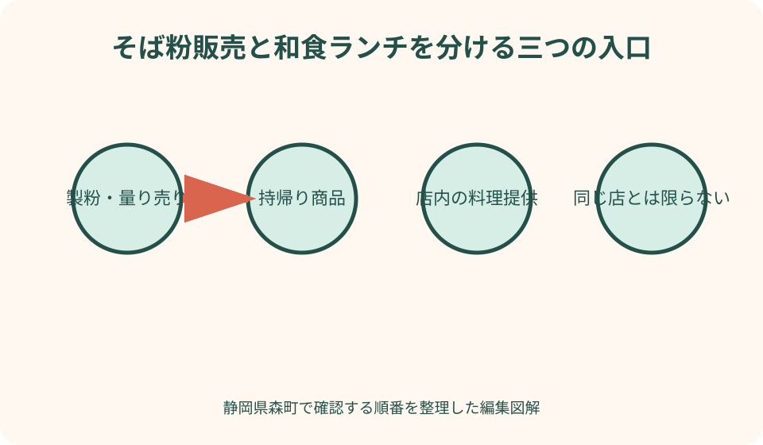
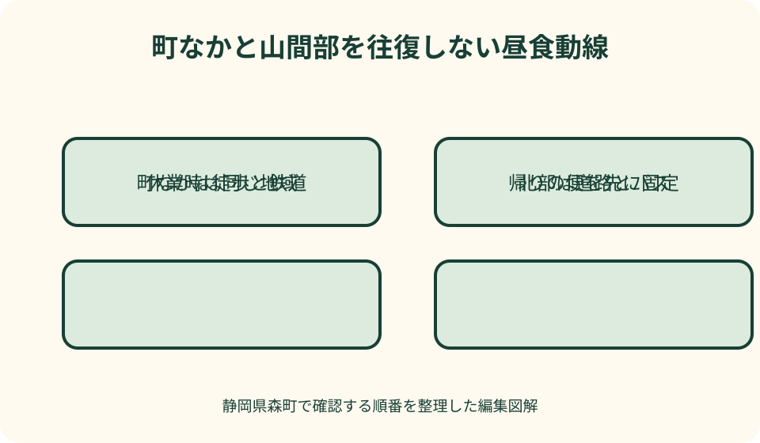

森町グルメ・そば和食｜最終確認 2026-08-10
静岡県森町のそば・和食ランチ｜そば粉販売と飲食店を分ける選び方
森町観光協会の「森のそば粉屋さん」は、そば粉専門店として工場直販、量り売り、二八蕎麦や菓子などを案内しています。一方、店名に「そば」があっても、希望時刻に席へ座ってそば料理を注文できる飲食店だとは限りません。製粉・販売、持帰り商品、その場での飲食提供を分けて確認することが出発点です。和食ランチを探す場合も、観光協会の店情報から予約、昼営業、注文終了、駐車、料理を店舗へ確認します。町なかと山間部を一日の候補に詰めず、移動と帰路に合う一地域を選びます。

最初に食べる・買う・作るの目的を分ける
森町でそばを探す時は、昼食として店で食べる、自宅でゆでる生そばを買う、そば粉を買って打つ、菓子やそば茶を選ぶ、のどれが目的か決めます。目的ごとに確認先が違います。
飲食店を探す人は、席、料理、注文できる時間を確認します。販売店を探す人は、商品、保存、発送を確認します。製粉工場の直販があることを、食堂営業の意味へ変換しません。
家族の希望が分かれる場合、昼食を先に一店で取り、粉や土産は帰路で購入します。飲食と買い物を同時に完了しようとして、店員へ掲載されていない料理を求めません。
町なかと山間部では道路、公共交通、店の密度が違います。食事だけで両方を往復せず、観光目的地に近い地域を選びます。アクティ森へ行く日は北部で予定をまとめます。
本記事は筆者がそばや和食の味を採点したランキングではありません。2026年8月10日に確認した森町、観光協会、店舗、アクティ森の公式情報を基に、使い分けを整理しています。
森のそば粉屋さんは製粉・直販情報として読む
森町観光協会は森のそば粉屋さんを、創業年を掲げるそば粉専門店として紹介しています。挽きたてのそば粉とそばの実の工場直販、量り売り、二八蕎麦、菓子などの掲載があります。
この掲載から、そばを席で注文して食べる通常の食堂だとは断定できません。休憩に関する説明があっても、飲食席、料理の調理提供、予約席の有無は店舗へ確認します。
二八蕎麦という商品名も、その場でゆでて提供される料理か、自宅用の商品かを表示で確認します。包装、要冷蔵、ゆで方、期限、持運びを店へ尋ねます。
そば粉は量り売りの掲載がありますが、価格や最少量をこの記事で将来保証しません。希望量、そば打ち経験、用途、粉の種類、発送を店舗公式発信または問い合わせで確認します。
観光協会から店舗の通販、Facebook、Instagramへの導線があります。最新の営業、不定休、商品案内を日付で確認し、古い投稿の在庫や価格を注文根拠にしません。
飲食提供の有無を電話で具体的に聞く
問い合わせでは「そばは食べられますか」だけでなく、希望日の昼に店内で調理したそば料理を注文できるか、席があるか、予約や受付が必要かを聞きます。
持帰り商品だけの日、売店中心、催し時だけの提供など、営業形態は変わり得ます。飲食できない返答を受けたら、購入店として利用するか、別の和食店を探します。
休憩場所がある場合も、購入品を食べられるか、席数、利用時間、ごみ、雨天時を確認します。河川や工場の近くへ自由に座れるとは考えません。
飲食を提供する和食店には、昼の入店、料理の注文終了、予約、人数、料理の売切れを尋ねます。観光協会ページの営業時間をその日の受付保証にしません。
電話がつながらず、公式にも当日情報がない場合は、山間部へ確認なしで向かいません。町なかの営業を確認できる候補か、アクティ森の最新施設案内へ変更します。
和食店は料理名より昼営業と予約条件を確認する
観光協会には魚伊、さゝ川など和食を扱う店の情報があります。ただし、さゝ川は夜のみと掲載されるため、和食という分類だけでランチ候補へ入れません。
魚伊には昼の部が掲載されていますが、都合による休業の注意と予約推奨があります。希望日の昼営業、席、料理、人数を直接確認し、掲載価格やコースを固定情報にしません。
和食店でも、そば料理を必ず提供するとは限りません。そばが目的なら料理名を尋ね、和食全般でよいなら魚、天ぷら、定食など当日選べる範囲を聞きます。
法事や団体予約がある日は通常席が少ないことがあります。少人数だから予約不要と決めず、観光前後の時刻を伝えます。遅れる場合の扱いも確認します。
店の数を増やすより、今日の昼に営業し、同行者が食べられ、駐車または帰りの便が合う一店を選びます。候補が合わなければ和食以外へ変える余地を残します。

営業・予約・売切れは出発前に再確認する
そば粉専門店は不定休の掲載があるため、遠方から行く日は店舗の最新投稿か直接連絡で営業を確認します。定休日が固定されていないことを、ほぼ毎日営業という意味にしません。
飲食店では、予約時刻、最終入店、料理の注文終了、売切れ時の代替を尋ねます。そばは数量限定か、予約で確保できるかも必要なら確認します。
予約できても全商品が確保されるとは限りません。席のみか料理込みかを聞き、希望料理が外せない場合は事前注文の要否を確認します。
到着時には営業札、駐車案内、受付、売切れ表示を見ます。公式ページと異なる場合は現地の案内を優先し、過去情報を示して提供を求めません。
休業や売切れなら、同じ地域で確認済みの第二候補へ一度だけ切り替えます。山間部と町なかを往復して昼食時刻を逃さず、帰路上で食べる方法も選びます。
駐車は山間道路と少ない区画を前提に確認する
森のそば粉屋さんには普通車の駐車場掲載がありますが、常に空いている保証ではありません。入口、転回、満車時の待機を店舗へ確認し、路上や工場動線へ停めません。
山間部では道幅、対向車、橋、雨後の路面を見ます。ナビが示す最短の細道へ入らず、店舗や施設の公式アクセスを優先します。
子どもや高齢者の乗降は、車が通る側で行いません。駐車枠から店までの傾斜や砂利を見て、必要なら大人が先に経路を確かめます。
町なか和食店も、店前と別駐車場を混同しないよう場所を聞きます。近隣店舗、住宅、路上へ無断駐車せず、満車なら予約先へ連絡します。
食後にアクティ森や寺社へ向かう時は、駐車場を観光用に使い続けません。会計後に車を移動し、次の施設の指定駐車場へ入れます。
そばアレルギーは食べない同行者も確認する
そばアレルギーがある人は、そばを注文しなければ安全とは限りません。製粉所では粉が舞う可能性、飲食店ではゆで湯、調理器具、揚げ油、作業台の共用を確認します。
症状が重い場合は、店舗へ入ること自体が可能か主治医の指示を基準に判断します。製粉工場直販を家族の立寄り先へせず、別行動や別店舗を選びます。
和食の天ぷらや菓子にもそば粉が使われる可能性を一般名から判断しません。対象商品、つゆ、薬味、デザートまで店へ具体的に尋ねます。
対応品を分けても、同じ器やトングを使う場合があります。店が安全を保証できない時は特別対応を迫らず、表示を確認できる別の食事場所へ変更します。
薬と緊急連絡先は車に置かず、同行者全員が携帯場所を知ります。山間部では医療機関までの距離も考え、食の体験を優先して危険を受け入れません。
子連れは麺の長さ・つゆ・席と待ちを確認する
子どもへそばを初めて食べさせる場所を旅行先にしません。アレルギーの確認と家庭の方針に従い、既に食べ慣れている場合も量、麺の長さ、つゆの濃さを大人が見ます。
子ども椅子、座敷、取分け器、ベビーカー置き場は観光案内から確定できません。必要な家族は予約時に尋ね、通路をふさがない案内に従います。
温かいそばや汁物は、丼の外側だけで温度を判断しません。大人が確認し、子どもの手が届く縁へ置かず、歩きながら食べさせません。
売店で生そばや粉を買う間、子どもを工場設備、川、駐車場へ近づけません。大人が交代で見守り、試食品があると期待せず、表示前に食べさせません。
列や提供待ちが長い時は、子どもの空腹と昼寝を見ます。待てない場合は持帰り品で昼食を代用せず、確実に食事できる別の店へ移ります。
量は一人前・大盛・持帰りを別に考える
そばの一人前は店や商品で違います。写真や価格から量を推測せず、麺量、セットの内容、大盛・少なめ、子どもの取分け可否を注文前に尋ねます。
和食セットでは、ご飯、天ぷら、小鉢、汁物が付く場合があります。すべて食べる前提で追加注文せず、内容を確認してから人数分を決めます。
生そばを持帰る時は、一袋の人数目安、ゆでる鍋の大きさ、保存、期限を聞きます。家庭の設備で一度に調理できない量を、安さだけで買いません。
そば粉は100グラムから量り売りの掲載がありますが、家庭で使う料理と回数を先に決めます。開封後の保存と使い切る期間を店へ尋ねます。
食後に山道を運転または歩く場合、満腹を目的にしません。体験や観光が続く日は追加品を控え、休憩してから出発します。
町なか・山間部・アクティ森を一日に詰めない
町なかで和食を取る日は、遠州森駅周辺の町並みや寺社を組み合わせます。昼食後に山間部の販売店へ急いで移動せず、土産は町なかで選ぶ代案があります。
森のそば粉屋さんへ行く日は、問詰地区とアクティ森周辺を同じ北部の軸として考えます。ただし両施設の営業と道路を別々に確認し、同じ地域だから徒歩で近いとは判断しません。
アクティ森は2026年にリニューアル案内があるため、2020年更新の町ページにあるレストランや営業時間を現行保証にしません。新しい施設公式へ確認します。
体験予約がある日は、昼食を先に入れて遅れないよう受付時刻を固定します。食事の列が長ければ、そば・和食に固執せず施設内の営業中候補へ変更します。
雨天や道路規制がある日は、山間部へ食事だけを目的に向かいません。町なか、帰路上、または自宅での食事へ変え、購入予約があれば店舗へ連絡します。

車なしは帰りの町営バスから逆算する
車を使わない北部訪問では、町が案内する天竜浜名湖鉄道、路線バス、町営バスの最新情報を開きます。運行日と時間が合う帰りの便を先に選びます。
町公式の古いアクティ森案内に所要例があっても、現在の運行保証にはしません。運行日、乗り場、時刻、支払を最新の町営バス情報で確認します。
店から停留所までの徒歩経路は、道路幅、坂、橋、雨を含めて見ます。直線距離が短くても歩道がない場合があるため、店舗へ安全な行き方を尋ねます。
粉や生そばを買うと荷物が重くなります。帰りの乗換えと持てる量を考え、発送が可能か店舗へ相談します。全商品が同じ発送条件とは限りません。
乗り遅れた時にタクシーがすぐ来るとは仮定しません。配車可否と連絡先を事前に確認し、帰りが確定しない場合は町なかの食事へ変更します。
良い点：食べる体験と粉を買う目的を分けられる
森町には、和食店の昼食と、そば粉専門店の直販という異なる入口があります。どちらかを選ぶことで、料理を食べたい人と自宅で作りたい人の目的を明確にできます。
森のそば粉屋さんは量り売りや発送の掲載があり、必要量を相談できる候補です。この利点は、当日営業、商品、用途、保存を店舗へ確認した時に成り立ちます。
町なかの和食は、公共交通と散策を組み合わせる候補になります。山間部は自然やアクティ森と組み合わせられます。それぞれを別日に分けられることも良い点です。
子ども、高齢者、アレルギーなど条件がある家族は、店の分類より必要な確認を優先できます。そばが難しければ和食、製粉所が難しければ町なかへ変更できます。
購入品を自宅で調理すれば、店内の混雑を避けられる場合があります。ただし、ゆで方、保存、アレルゲン管理を家庭が担うため、簡単な代案とは一律に言えません。
注文したい点：販売・飲食・休憩の区分を明記したい
観光案内では、製粉、工場直販、持帰り、飲食提供、休憩場所を別の項目で示すと誤解を減らせます。料理の提供日と商品販売日が違う場合も更新日付きで分けたいです。
和食店には、昼・夜、予約、注文終了、売切れ、駐車、子ども席、そばアレルギー相談を一覧化すると便利です。不明は要問い合わせと明示できます。
山間部の地図には、推奨道路、別駐車場、バス停、坂や狭い区間を示すと、初訪問者が最短経路へ迷い込むのを防げます。
アクティ森はリニューアル後の飲食・販売情報を新しい公式ページへ集約し、古い町ページから現行案内へ進める表示が必要です。
公共交通ページから、北部の観光・飲食施設と帰りの便へ進める導線があると、車なしの旅行者が営業と移動を同時に判断できます。
代案・結論：食べる店と買う店を一つずつ確認する
前日は、昼食なら飲食提供、購入なら商品販売を確認します。営業、予約、売切れ、駐車またはバス、アレルギー、量を店へ尋ね、目的を混ぜません。
当日は、町なかか山間部の一方を選びます。営業札と駐車案内を見て、予約と違う状況なら店へ相談します。無断駐車や予定外の長距離移動をしません。
そばアレルギーがあれば、食べない同行者も含めて製粉、ゆで湯、器具、店内環境を確認します。安全を確保できなければ、そばを扱わない別候補へ変えます。
休業や売切れなら、同じ地域の第二候補を一つ確認し、難しければ帰路上の食事へ移ります。生そばや粉を買って昼食代わりにせず、調理できる自宅まで持帰ります。
結論は、森町のそば・和食を一つの店種として扱わないことです。席で食べる料理と、持帰る商品・粉を分け、今日確認できた一つの目的だけを完了します。
大石の視点：地域の店は業態を正確に家族へ伝える
私（大石）は、地元の店を家族へ紹介する時、店名からサービスを想像して伝えません。製粉所、売店、食堂という業態の違いを確認し、できることと要問い合わせを分けます。
記録には、訪問日、公式発信、営業、飲食か販売か、駐車、バス、アレルギー、購入量、保存を書きます。次回も同じ商品や価格があるとはせず、再確認欄を付けます。
実家でそばをゆでる計画なら、水道、鍋、火、冷蔵庫、食器が使えるか先に確認します。空き家の設備を当然に使わず、そば粉を残置して害虫を招かないよう持ち帰ります。
山間部の土地や家を確認する日も、食事の予約へ急いで道路や戸締りを省きません。作業が延びたら店へ連絡し、昼食を帰路へ変えます。
この記事の確認日は2026年8月10日です。営業、価格、商品、飲食提供、道路、公共交通、アクティ森は変更される場合があります。訪問日には店舗と各当事者の公式案内を確認してください。
公式情報・確認先
掲載内容は次の一次情報を基礎に整理しました。営業、料金、催し、交通は変わるため、出発前または手続き前にリンク先で最新情報を確認してください。
- 観光（静岡県森町、2026-08-10確認）
- 観光パンフレット（静岡県森町、2026-08-10確認）
- 森町の公共交通について（静岡県森町、2026-08-10確認）
- 森町体験の里アクティ森リニューアルオープンについて（静岡県森町、2026-08-10確認）
- 森のそば粉屋さん（森町観光協会、2026-08-10確認）
- 森のそば粉屋さん Instagram（森のそば粉屋さん、2026-08-10確認）
- 魚伊（森町観光協会、2026-08-10確認）
- さゝ川（森町観光協会、2026-08-10確認）